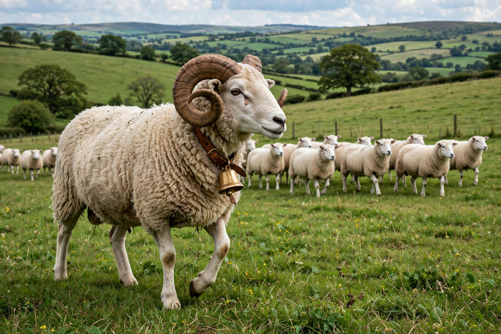

A bellwether is a leader or an indicator of future trends. The term derives from the practice of placing a bell around the neck of a wether (a castrated ram) that leads a flock of sheep; by following the sound of the bell, a shepherd can track the movements of the entire flock without observing each animal.
In politics, a bellwether is a political unit — a state, county, constituency or demographic group — whose voting results are regarded as a reliable indicator of how a wider electorate will vote or has voted. Bellwether areas are said to "vote for the winner" over a long sequence of elections, and candidates and analysts watch them closely on election night as early predictors of the overall result.
In the United States, Ohio long enjoyed a reputation as the pre-eminent bellwether state in presidential elections, having voted for the winning candidate in every election from 1964 to 2016. Missouri was an even more famous historical bellwether: between 1904 and 2004 it voted for the winner in every presidential election except 1956, giving rise to the saying "As Missouri goes, so goes the nation." At county level, Vigo County, Indiana, voted for the winning presidential candidate in every election from 1956 to 2016, and has been correct in nearly every election since 1888.
Political scientists note that the predictive power of traditional bellwethers has weakened as electorates have become more polarised and demographically sorted. Ohio and Missouri both voted Republican by wide margins in 2020 even though the Democratic candidate won the presidency, prompting commentators to declare the "death of the bellwether." With most states now reliably aligned with one party, attention has shifted to a small group of closely contested "swing states" and to bellwether counties within them.
In business and finance, a "bellwether stock" is a company considered an indicator of the health of its industry or the wider economy. In litigation, "bellwether trials" are test cases selected from a large pool of similar lawsuits whose outcomes are used to gauge the likely results of the remaining cases and to guide settlement negotiations.
Swing state · Red states and blue states · Lame duck (politics)